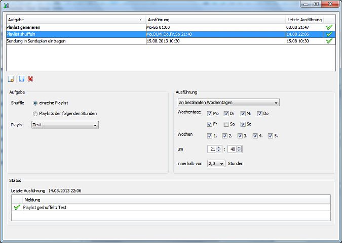

Um eine bestehende Aufgabe zu löschen wähle sie aus und klicke auf

Station Admin kann eine Reihe von Aufgaben automatisch nach einem angegebenen Zeitplan ausführen.
Um Aufgaben zu verwalten klicke im -Menü auf .
Es öffnet sich das Fenster für die Aufgabenverwaltung. Im oberen Teil siehst Du die bereits konfigurierten Aufgaben, im unteren Teil siehst Du die Details zu der gerade ausgewählten Aufgaben.
In den Details für eine einzelne Aufgabe siehst du die Konfiguration der eigentlichen Aufgabe (links oben), die Konfiguration des Zeitplans (rechts oben) und die Statusmeldungen der letzten Ausführung (unten).
Um eine neue Aufgabe zu erstellen klicke auf und wähle den Typ der Aufgabe. Konfiguriere dann die Details und den Zeitplan und klicke auf  .
.
Um eine bestehende Aufgabe zu löschen wähle sie aus und klicke auf  .
.
Es stehen zur Zeit folgende Arten von Aufgaben zur Verfügung:
Für das Shuffeln von Playlists gibt es zwei Varianten:
Für das Generieren von Playlists gibt es zwei Varianten:
Um eine einzelne Sendung in den Sendeplan einzutragen wähle bitte Wochentag und Stunde aus an dem die Sendung eingetragen werden soll sowie die Playlist die eingetragen werden soll. Die Sendung läuft dann bis zum Start der folgenden Sendung. Ist bereits eine Sendung zu dem Zeitpunkt eingetragen wird der alte Eintrag überschrieben.
Innerhalb von Station Admin kannst Du den Sendeplan in eine Datei exportieren und zu einem späteren Zeitpunkt wieder importieren. Um dies über eine Aufgabe zu erledigen wähle einfach die zu importierende Sendeplandatei aus.
Es gibt folgende Varianten für einen Zeitplan:
Wähle die Wochentage aus an denen die Aufgabe ausgeführt werden soll. Jede Kombination von Wochentagen ist möglich.
Wähle die Wochen des Monats aus in denen die Aufgabe ausgeführt werden soll. Wähle alle Wochen (1-5) wenn die Aufgabe jede Woche ausgeführt werden soll.
Wähle eine Uhrzeit aus zu der die Aufgabe ausgeführt werden soll.
Wähle die Tage aus an denen die Aufgabe ausgeführt werden soll. Jede Kombination von Tagen ist möglich. Soll eine Aufgaben immer am letzten Tag des Monats ausgeführt werden wähle bitte die 31 aus.
Wähle eine Uhrzeit aus zu der die Aufgabe ausgeführt werden soll.
Eine Aufgabe kann auch einmalig zu einem bestimmten Zeitpunkt ausgeführt. Gib dazu das Datum und die Uhrzeit an.
Im Statusbereich findest Du Informationen darüber wann die Aufgabe das letzte Mal ausgeführt wurde und was dabei gemacht wurden. Wurden z. B. Playlists für mehrere Stunden generiert findest Du für jede generierte Playlist eine Meldung. Ist etwas schief gegangen findest Du eine Fehlermeldung.